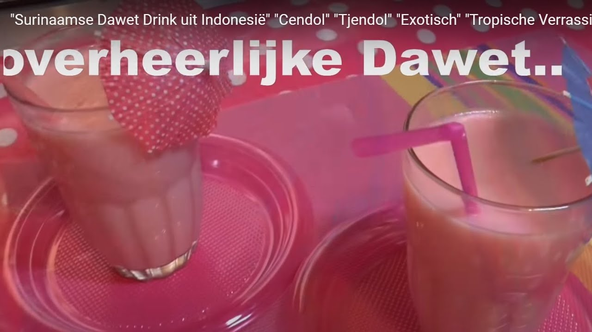
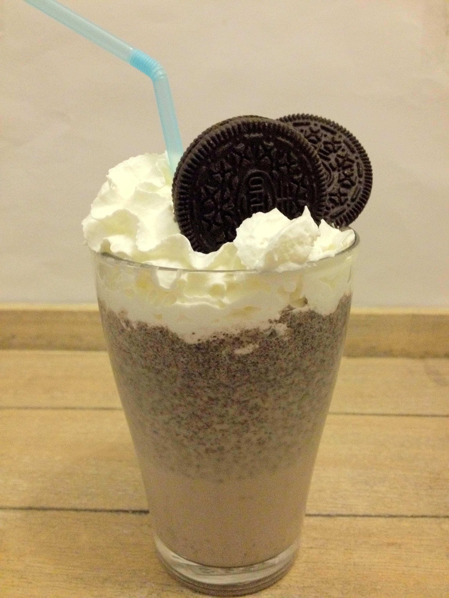

Welcome to
with a lower than 13 character title suited for the spring board */-->
Obligaties - binnenlandse obligaties | Het Financieele Dagblad</h2> 2021.03.30 15:54
<center></center><br><br><span> <span> </span> <span> <span> Home</span> </span> </span> <span> <span> <span> Mijn nieuws</span> </span> </span> <span> <span> <span> Net binnen</span> </span> </span> <span> <span> <span> Krant</span> </span> </span> <span> <span> <span> Dossiers</span> </span> </span> <span> <span> <span> Beurs</span> </span> <span> <i> </i> <i> </i> </span> Nationaal Internationaal Analyse Rente en valuta Grondstoffen Derivaten Beleggingsfondsen Indices Obligaties </span> <span> <span> <span> FD Persoonlijk</span> </span> </span> <span> <span> <span> Service & Contact</span> </span> </span> <span> <span> <span> Abonneren</span> </span> </span> <span> <span> <span> Vacatures</span> </span> </span> <span> <span> <span> Adverteren</span> </span> </span> <span> Meer <i> </i> <i> </i> </span> <span> <i> </i> </span> <span> <span> <span> Dossiers</span> </span> </span> <span> <span> <span> Beurs</span> </span> <span> <i> </i> <i> </i> </span> Nationaal Internationaal Analyse Rente en valuta Grondstoffen Derivaten Beleggingsfondsen Indices Obligaties </span> <span> <span> <span> FD Persoonlijk</span> </span> </span> <span> <span> <span> Service & Contact</span> </span> </span> <span> <span> <span> Abonneren</span> </span> </span> <span> <span> <span> Vacatures</span> </span> </span> <span> <span> <span> Adverteren</span> </span> </span> <span> <i> </i> </span> Staatsobligaties Bedrijfsobligaties Convertibles Powered by <b> Infront</b> <h1> Beursnieuws</h1> 1 uur <span> Spannend hè, die AEX</span> 8 uur <span> Live: AEX onveranderd, financiële waarden aan kop</span> 15 uur <span> Wirecard-uitverkoop: Nederlands investeringsfonds koopt Turkse dochter</span> 15 uur <span> De Goudse neemt belang in adviseur sociale premies</span> 21 uur <span> Veel belangstelling, maar toch een verlaging van de prijs bij Deliveroo</span> Meer beursnieuws<i> </i> <h1> Fondsnieuws</h1> <span> Corona geen gamechanger voor retailvastgoed </span> <span> Han Dieperink: het gezichtsverlies van de margin call </span> <span> Je moet nu risico afbouwen in Europees high yield’ </span> <span> Triodos IM wil impact-mandaten gaan aanbieden</span> <span> Han Dieperink: koude oorlog om semiconductors </span> <span> Han Dieperink: voor distressed debt is het nu te laat </span> Naar fondsnieuws.nl<i> </i> <span> <span> <span> FD Redactie</span> </span> <span> <i> </i> <i> </i> </span> Colofon LinkedIn Twitter Facebook </span> <span> <span> <span> FD Producten</span> </span> <span> <i> </i> <i> </i> </span> FD e-paper FD Wijnen FD Vacatures </span> <span> <span> <span> Service & Contact</span> </span> <span> <i> </i> <i> </i> </span> Abonneren Bedrijfslicenties Bezorgmelding maken Hulp bij inloggen FAQ Instellingen (Mijn FD) </span> <span> <span> <span> Voorwaarden</span> </span> <span> <i> </i> <i> </i> </span> Adverteren Copyright Statement Cookies Privacy Werken bij FD Familieberichten Responsible Disclosure </span> <span> <span> <span> BNR Nieuwsradio</span> </span> <span> <i> </i> <i> </i> </span> Company.info Energeia ESB De Jurist FD Mediagroep Fondsnieuws Pensioen Pro Springest </span><br>
<iframe width="615 height="315" src="https://www.youtube.com/embed/dksjrgBgz-E" frameborder="0" allow="accelerometer; autoplay; encrypted-media; gyroscope; picture-in-picture" allowfullscreen></iframe><br> 
<br class="clearfix" />
</div>
<div id="sidebar">
<div class="box">
<h3>Menu</h3>
<ul>
<li><a href="index.html">Pizza stokbrood - snel en simpel recept - Lekker en Simpel</a></li>
<li><a href="1.html">binnenlandse obligaties - Het Financieele Dagblad</a><br></li>
<li><a href="2.html">Kinderopvang | Rijksoverheid.nl</a><br></li>
<li><a href="3.html">Genoteerde beleggingsfondsen - realtime koersen Amsterdam ...</a><br></li>
<li><a href="4.html">Smoothies: 10 lekkere recepten voor de perfecte smoothie ...</a><br></li>
<li><a href="5.html">Voedzaam & Snel - Gezonde recepten die makkelijk en snel ...</a><br></li>
<li><a href="6.html">Recepten | Ekoplaza | De grootste biologische ...</a><br></li>
<li><a href="7.html">2x: Bereid je Beste Butternutsoep met (Groot)Moeder's ...</a><br></li>
<li><a href="8.html">Nasi goreng recept - Indonesische gebakken rijst - Lekker ...</a><br></li>
<li><a href="9.html">Smoothie recepten - 465 smoothie gerechten | Smulweb.nl</a><br></li>
</ul>
</div>
</div>
<br class="clearfix" id="mnrjpCgBnMvbB"/>
</div>
<div id="page-bottom">
<div id="page-bottom-content">
<p>
<ul>
<li><a href="index.html">Pizza stokbrood - snel en simpel recept - Lekker en Simpel</a><br> 5 tips met recept om je makkelijkste butternutsoep te maken met het minste werk en de meeste smaak. Bonus: grootmoeder’s simpel pompensoep recept boordevol smaak! De lekkerste pompoensoep maak je met de butternut of flespompoen. Kies daarbij de lekkerste vetstof voor pompoen: boter, en succes is al verzekerd.</li>
<li><a href="1.html">binnenlandse obligaties - Het Financieele Dagblad</a><br> Lekkere en makkelijke recepten die ieder kan maken. Kies uit deze 5 lekkere pastinaaksoep recepten. 1: klassiek met appel volgens Jeroen Meus. 2: verrassende volgens Piet Huysentruyt. 3 + 4: nieuwe Bonus recepten van Sandra Bekkari, Of 5: lekker oosters genieten van een warme kom roomsoep.</li>
<li><a href="2.html">Kinderopvang | Rijksoverheid.nl</a><br> We kwamen er dus laatst achter dat we niet eens een nasi goreng recept op de site hadden staan, maar daar komt vandaag verandering in. We hebben wel een Surinaamse nasi of een nasi met bloemkoolrijst gemaakt, maar dat is toch net even anders. Nasi goreng, oftewel gebakken rijst, is door de vele kruiden rijk aan smaak.</li>
<li><a href="3.html">Genoteerde beleggingsfondsen - realtime koersen Amsterdam ...</a><br> Een smoothie is als brandstof die je nodig hebt om de dag door te komen. Je kunt ‘m drinken tijdens het ontbijt, lunch of avondeten voor extra energie. Laat je inspireren door onze 10 lekkerste smoothies! Een glas boordevol vitamientjes, dat geeft je vast een zeker een energieboost! Lekker, zoet en zonder schuldgevoel genieten.</li>
<li><a href="4.html">Smoothies: 10 lekkere recepten voor de perfecte smoothie ...</a><br> Naam *. E-mail *. Site. Mijn naam, e-mail en site bewaren in deze browser voor de volgende keer wanneer ik een reactie plaats. Wanneer je dit formulier gebruikt, ga je akkoord met de opslag en verwerking van jouw gegevens door deze website.</li>
<li><a href="5.html">Voedzaam & Snel - Gezonde recepten die makkelijk en snel ...</a><br> Eigen recept; Appel-banaan smoothie. Deze smoothie is heerlijk zacht en romig. De appel-banaan combinatie zorgt voor een frisse indruk. Pas op: heeft een verslavende werking:) INGREDIENTEN - 1 appel, - halve banaan, - 200 ml appelsap, - 1 theelepel kaneelpoeder ...</li>
<li><a href="6.html">Recepten | Ekoplaza | De grootste biologische ...</a><br> Gezonde recepten die makkelijk en snel te bereiden zijn. Het gezondste foodblog van Nederland!</li>
<li><a href="7.html">2x: Bereid je Beste Butternutsoep met (Groot)Moeder's ...</a><br> 31-01-2021 | 17:42. Vanaf maandag 8 februari gaan de basisscholen, de kinderdagopvang en het speciaal (basis)onderwijs weer volledig open. Dat heeft ...</li>
<li><a href="8.html">Nasi goreng recept - Indonesische gebakken rijst - Lekker ...</a><br> Het laatste nieuws over de beurs, financiële wereld, economie, politiek en ondernemen vind je op fd.nl</li>
<li><a href="9.html">Smoothie recepten - 465 smoothie gerechten | Smulweb.nl</a><br> Smoothie 79 . Tussendoortje 74 . Voor Beter Eten 16 . Voorgerecht 120 . Vegetarisch 748 . Hoofdgerecht . Thaise curry met garnalen . 4 personen . Lunchgerecht . Thaise kippensoep met ei en koriander ...</li>
</ul>
</p>
</div>
<br class="clearfix" id="XPiwFSXWQ3I4hW"/>
</div>
</div>
<div id="footer"> <ul>
<li><a href="privacy-policy.html">Privacy policy</a></li>
<li><a href="terms.html">Terms and Conditions</a></li>
<li><a href="photo.html">Photo gallery</a></li>
<li class="last"><a href="contact.html">Contacts</a></li>
</ul>
© . All rights reserved | </a>.
</div>
</body>
</html>